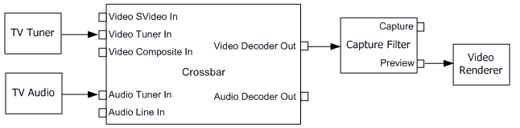

description: Analog Television
ms.assetid: 9f2c18ec-3684-42a8-a3df-5f8827b27642
title: Analog Television
ms.topic: article
ms.date: 4/26/2023
ms.custom: UpdateFrequency5
Analog Television
[The feature associated with this page, DirectShow, is a legacy feature. It has been superseded by MediaPlayer, IMFMediaEngine, and Audio/Video Capture in Media Foundation. Those features have been optimized for Windows 10 and Windows 11. Microsoft strongly recommends that new code use MediaPlayer, IMFMediaEngine and Audio/Video Capture in Media Foundation instead of DirectShow, when possible. Microsoft suggests that existing code that uses the legacy APIs be rewritten to use the new APIs if possible.]
Analog television differs from other video capture scenarios in several ways:
- The tuner card tunes to an analog signal, which is then digitized.
- Audio is carried in the analog signal. How the audio reaches the sound card varies depending on the hardware.
- The signal may contain additional data in the vertical blanking interval (VBI), such as closed captions (CC), World Standard Teletext (WST), and extended data services (XDS).
The following diagram shows a typical filter graph for television preview.

- The TV Tuner filter controls tuning.
- The TV Audio filter controls the audio decoding.
- If the tuner card has more than one physical input, the Analog Video Crossbar filter enables the application to select which input is decoded and rendered.
- The WDM Video Capture filter delivers the digitized video stream.
The Capture Graph Builder automatically inserts any filters that are required upstream from the capture filter.
This section contains the following topics:
Related topics
Video Capture
Â
Â